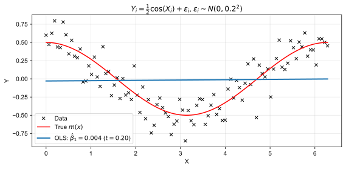
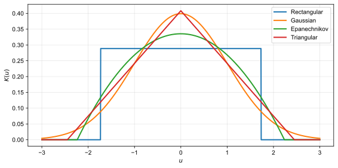
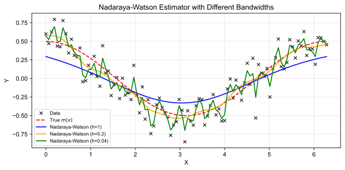
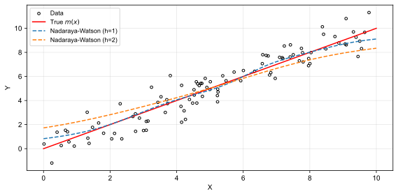
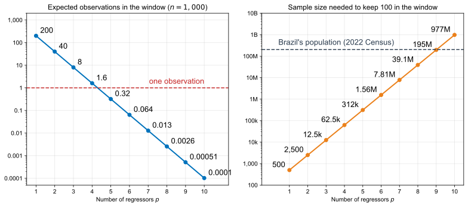

So far, you have concentrated on parametric models: \[ Y_i = g(X_i, \theta) + u_i \] where \(g\) is a known function and \(\theta\) needs to be estimated.
Our goal will be estimating \[ m(x) = \E[Y|X = x] \]

\[ \hat{m}(x) = \frac{\sum_{i=1}^{n} I_{\{X_i = x\}}\cdot Y_i}{\sum_{i=1}^n I_{\{X_i = x\}}} \]
Given \(h>0\) (the bandwidth), the binned estimator is \[ \hat{m}(x) = \frac{ \displaystyle\sum_{i=1}^n I_{\left\{ |X_i - x| \leq h \right\}}\cdot Y_i }{ \displaystyle\sum_{i=1}^n I_{\left\{ |X_i - x| \leq h \right\}} } \]
We can also write \[ \hat{m}(x) = \sum_{i=1}^n w_i(x)\cdot Y_i, \qquad w_i(x) \equiv \frac{I_{\left\{ |X_i - x| \leq h \right\}}}{\sum_{j=1}^n I_{\left\{ |X_j - x| \leq h \right\}}} \] where the \(w_i(x)\)’s are weakly positive and \(\sum_{i=1}^n w_i(x) = 1\).
Definition (Second-Order Kernel)
A second-order kernel function \(K(u)\) satisfies:
| Kernel | Formula | \(R(K)\) |
|---|---|---|
| Rectangular | \(\displaystyle K(u) = \begin{cases} \dfrac{1}{2\sqrt{3}} & \text{if } \lvert u\rvert < \sqrt{3} \\ 0 & \text{otherwise} \end{cases}\) | \(\displaystyle \dfrac{1}{2\sqrt{3}}\) |
| Gaussian | \(\displaystyle K(u) = \frac{1}{\sqrt{2\pi}}\exp\left(-\frac{u^2}{2}\right)\) | \(\displaystyle \frac{1}{2\sqrt{\pi}}\) |
| Epanechnikov | \(\displaystyle K(u) = \begin{cases} \dfrac{3}{4\sqrt{5}}\left(1-\dfrac{u^2}{5}\right) & \text{if } \lvert u\rvert < \sqrt{5} \\ 0 & \text{otherwise} \end{cases}\) | \(\displaystyle \dfrac{3\sqrt{5}}{25}\) |
| Triangular | \(\displaystyle K(u) = \begin{cases} \dfrac{1}{\sqrt{6}}\left(1-\dfrac{\lvert u\rvert}{\sqrt{6}}\right) & \text{if } \lvert u\rvert < \sqrt{6} \\ 0 & \text{otherwise} \end{cases}\) | \(\displaystyle \dfrac{\sqrt{6}}{9}\) |
All four are scaled to have unit variance. \(R(K) \equiv \int K(u)^2\,du\) is the kernel’s roughness (more on it later).

For a given bandwidth \(h>0\), the Nadaraya-Watson (NW) estimator is \[ \hat{m}(x) = \frac{\sum_{i=1}^n K\left(\frac{X_i - x}{h}\right) \cdot Y_i}{\sum_{i=1}^n K\left(\frac{X_i - x}{h}\right)} \]
Questions?
Asymptotic setup:
Write \(Y_i = m(X_i) + U_i\), where \(\E[U_i|X_i] = 0\) and \(\sigma^2(x) \equiv \Var(U_i | X_i = x)\).
Fix \(x \in \R\) and write \(Y_i = m(x) + \left(m(X_i) - m(x)\right) + U_i\).
Then: \[ \begin{aligned} \frac{1}{nh} \sum_{i=1}^n K\left( \frac{X_i - x}{h} \right) Y_i &= \frac{1}{nh} \sum_{i=1}^n K\left( \frac{X_i - x}{h} \right) m(x) \\ &\quad + \underbrace{\frac{1}{nh} \sum_{i=1}^n K\left( \frac{X_i - x}{h} \right) \left(m(X_i) - m(x)\right)}_{\equiv\, \hat{\Delta}_1(x)} \\ &\quad + \underbrace{\frac{1}{nh} \sum_{i=1}^n K\left( \frac{X_i - x}{h} \right) U_i}_{\equiv\, \hat{\Delta}_2(x)} \end{aligned} \]
\[ \hat{m}(x) - m(x) = \frac{1}{f_n(x)}\left[\hat{\Delta}_1(x) + \hat{\Delta}_2(x) \right] \]
We will show that \(\sqrt{nh}\cdot \hat{\Delta}_1(x)\) converges in probability and \(\sqrt{nh}\cdot \hat{\Delta}_2(x)\) has a limiting distribution.
\[ \frac{1}{nh^2} \int_{-\infty}^{\infty} K\left( \frac{z - x}{h} \right)^2 \sigma^2(z) f(z) \, dz = \frac{1}{nh} \int_{-\infty}^{\infty} K(u)^2\, \sigma^2(x + hu)\, f(x + hu)\, du \]
\[ \frac{1}{nh} \int_{-\infty}^{\infty} K(u)^2\, \sigma^2(x + hu)\, f(x + hu)\, du = \frac{\sigma^2(x)f(x)}{nh}\int_{-\infty}^{\infty}K(u)^2\,du + o\left(\frac{1}{nh}\right) \]
\[ \Var\left[ \hat{\Delta}_2(x) \right] = \frac{\sigma^2(x)f(x)R(K)}{nh} + o\left(\frac{1}{nh}\right) \]
\[ \sqrt{nh}\,\hat{\Delta}_2(x) \xrightarrow{d} N\left(0, \sigma^2(x)f(x)R(K)\right) \]
Now the other guy, \(\hat{\Delta}_1(x)\), using similar tricks: \[ \begin{aligned} \E[\hat{\Delta}_1(x)] &= \frac{1}{h} \, \E \left[ K\left( \frac{X_i - x}{h} \right) \left( m(X_i) - m(x) \right) \right] \\ &= \frac{1}{h} \int_{-\infty}^{\infty} K\left( \frac{z - x}{h} \right) \left( m(z) - m(x) \right) f(z) \, dz \\ &= \int_{-\infty}^{\infty} K(u) \left( m(x + hu) - m(x) \right) f(x + hu) \, du \end{aligned} \]
Add the assumptions \(f \in C^1\) and \(m \in C^2\), and expand: \[ \begin{gathered} m(x + hu) - m(x) = m'(x)hu + \tfrac{1}{2} m''(x) h^2 u^2 + o(h^2)\\ f(x + hu) = f(x) + f'(x)hu + o(h) \end{gathered} \]
Distribute the terms:
\[ (m(x + hu) - m(x)) \cdot f(x + hu) = m'(x)f(x)hu + m'(x)f'(x)h^2u^2 + \tfrac{1}{2}m''(x)f(x)h^2u^2 + o(h^2) \]
The term linear in \(u\) integrates to zero (symmetric \(K\)), so: \[ \begin{aligned} \E[\hat{\Delta}_1(x)] &= h^2 \left(\int_{-\infty}^{\infty}u^2K(u)\,du\right)\left(m'(x)f'(x) + \tfrac{1}{2}m''(x)f(x)\right) + o(h^2)\\ & = h^2 \kappa_2 f(x) B(x) + o(h^2) \end{aligned} \] where \(B(x) \equiv m'(x)\frac{f'(x)}{f(x)} + \frac{1}{2}m''(x)\) and \(\kappa_2\equiv \int_{-\infty}^{\infty}u^2K(u)\,du\).
Questions: is \(B(x)\) random? How does \(h\) affect \(\E[\hat{\Delta}_1(x)]\)?
\[ \Var(\hat{\Delta}_1(x)) = o\left(\frac{1}{nh}\right) \]
\[ \sqrt{nh}\left(\hat{\Delta}_1(x) - h^2 \kappa_2 f(x) B(x)\right) \xrightarrow{p} 0 \]
as long as \(nh^5 = O(1)\) (why do we need this?)
See Chapter 19 of Hansen’s Econometrics for all the technical conditions.
Theorem (Asymptotic Distribution of the NW Estimator)
Under regularity conditions, for interior \(x\), \[ \sqrt{nh} \left( \hat{m}(x) - m(x) - h^2 \kappa_2 B(x) \right) \xrightarrow{d} N\left(0, \frac{\sigma^2(x) R(K)}{f(x)} \right) \] where \(B(x) = m'(x)\frac{f'(x)}{f(x)} + \frac{1}{2}m''(x)\).
Questions?
\[ \hat{m}(x) - m(x) \approx N\left(h^2 \kappa_2 B(x), \frac{\sigma^2(x)R(K)}{nh\cdot f(x)}\right) \]

viewof h = Inputs.range([0.02, 3], {value: 0.3, step: 0.01, transform: Math.log, label: "Bandwidth h"})
viewof n = Inputs.range([20, 5000], {value: 100, step: 1, transform: Math.log, label: "Sample size n"})
viewof kernel = Inputs.radio(["Gaussian", "Epanechnikov"], {value: "Gaussian", label: "Kernel"})data = d3.range(n).map(i => {
const x = 2 * Math.PI * i / (n - 1)
const m = 0.5 * Math.cos(x)
return {x, m, y: m + eps_pool[i]}
})
// Unit-variance kernels, as in the table (normalizing constants cancel in NW)
K = kernel === "Gaussian"
? (u => Math.exp(-0.5 * u * u))
: (u => Math.abs(u) < Math.sqrt(5) ? 1 - u * u / 5 : 0)
// Nadaraya-Watson on a grid; 0/0 (no data in the window) leaves a gap
fit = d3.range(301).map(j => {
const x0 = 2 * Math.PI * j / 300
let num = 0, den = 0
for (const d of data) { const w = K((d.x - x0) / h); num += w * d.y; den += w }
return {x: x0, mhat: den > 0 ? num / den : NaN}
})
Plot.plot({
width: 1200, height: 430, marginLeft: 60, marginBottom: 50,
style: {fontSize: "21px", fontFamily: "Arial, Arimo, sans-serif"},
x: {label: "X", labelAnchor: "center", labelArrow: "none"},
y: {label: null, domain: [-1, 1], ticks: 5},
grid: true,
marks: [
Plot.dot(data, {x: "x", y: "y", symbol: "times", stroke: "black",
r: n <= 200 ? 4 : n <= 1000 ? 3 : 2, strokeOpacity: n <= 200 ? 1 : n <= 1000 ? 0.6 : 0.35}),
Plot.line(data, {x: "x", y: "m", stroke: "#C62828", strokeWidth: 2, strokeDasharray: "7,5"}),
Plot.line(fit, {x: "x", y: "mhat", stroke: "#0072BC", strokeWidth: 3}),
Plot.text([`NW fit, h = ${h.toFixed(2)}, n = ${n}`], {frameAnchor: "bottom-right", dx: -10, dy: -38, fill: "#0072BC", fontWeight: "bold", fontSize: 22, stroke: "white", strokeWidth: 6}),
Plot.text(["true m(x)"], {frameAnchor: "bottom-right", dx: -10, dy: -10, fill: "#C62828", fontSize: 22, stroke: "white", strokeWidth: 6})
]
})
\[ \hat{m}(x) = \arg\min_{c \in \R} \sum_{i=1}^{n}K\left(\frac{X_i - x}{h}\right)\cdot (Y_i-c)^2 \]
Definition (Local-Linear Estimator)
For each \(x\), solve \[ \left(\hat{\beta}_0(x), \hat{\beta}_1(x)\right) = \arg \min_{(b_0, b_1)} \sum_{i=1}^n K\left(\frac{X_i - x}{h}\right)(Y_i - b_0 - b_1(X_i - x))^2 \] The local-linear estimator of \(m(x)\), denoted \(\hat{m}_{LL}(x)\), is the local intercept \(\hat{\beta}_0(x)\).
\[ \sqrt{nh} \left( \hat{m}_{LL}(x) - m(x) - h^2 \kappa_2 \frac{m''(x)}{2} \right) \xrightarrow{d} N\left(0, \frac{\sigma^2(x) R(K)}{f(x)} \right) \]
Questions?
\(X \sim U[0,1]^p\), window of half-width \(h = 0.1\): it covers a share \(0.2^p\) of the cube

\[ \hat{m}(x) \pm 1.96 \cdot \sqrt{\frac{\hat{\sigma}^2(x) R(K)}{nh\, f_n(x)}} \]
where \(\hat{\sigma}^2(x)\) comes from the residuals of your fit, smoothed with the same kernel
Questions?